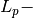

Warning
You are consulting the doc of a former version of PICOS. The latest version is HERE.
Summary of implemented functions¶
Operators to manipulate PICOS Expressions¶
| Operator | Interpretation |
|---|---|
| + | addition |
| += | inplace addition |
| - | substraction |
| * | multiplication |
| ^ | Hadamard (elementwise) product |
| | | scalar product |
| / | division |
| ** | exponentiation |
| abs() | Euclidean (or Frobenius) norm |
| [] | slicing |
| & | horizontal concatenation |
| // | vertical concatenation |
| .T | transposition |
| .H | Hermitian transposition |
| .Tx | partial transposition |
| .conj | complex conjugate |
| .real | real part |
| .imag | imaginary part |
Operators that create constraints¶
| Operator | Interpretation |
|---|---|
| < or <= | less or equal |
| > or >= | larger or equal |
| == | equal |
| << | Löwner ordering  ,
or set membership ,
or set membership  |
| >> | Löwner ordering  ,
or set membership ,
or set membership  |
functions that create affine expressions¶
| function | short doc |
|---|---|
| sum() | sums a list of affine expressions |
| diag() | diagonal matrix defined by its diagonal |
| diag_vect() | vector of diagonal elements of a matrix |
| new_param() | constant affine expression |
| trace() | trace of a square affine expression |
| lowtri() | vector of lower triangular elements |
| partial_transpose() | partial transposition |
functions to create convex constraints¶
| function | short doc |
|---|---|
| geomean() | geometric mean |
| norm() | (generalized)  norm |
| tracepow() | trace of a *p*th matrix power |
| detrootn() | *n*th root of determinant |
| sum_k_largest() | sum of k largest elements |
| sum_k_smallest() | sum of k smallest elements |
| sum_k_largest_lambda() | sum of k largest eigenvalues |
| sum_k_smallest_lambda() | sum of k smallest eigenvalues |
| lambda_max() | largest eigenvalue |
| lambda_min() | smallest eigenvalue |
functions that create sets¶
| function | short doc |
|---|---|
| ball(r,p) | a  - ball of radius r - ball of radius r |
| simplex(a) | a standard simplex
 |
| truncated_simplex(a) |
|
 or
or

Other useful functions¶
To transform a problem¶
| function | short doc |
|---|---|
| convert_quad_to_socp() | replaces quadratic constraints by equivalent second order cone constraints |
| to_real() | transform complex SDP to real SDP |
| dualize() | returns Lagrangian dual of a problem |
Get information on a problem¶
| function | short doc |
|---|---|
| get_variable(name) | gets the variable object name |
| get_valued_variable(name) | gets the value of the variable name |
| check_current_value_feasibility() | are the current variable value feasible? |
| obj_value() | objective for the current variable values |
| .type | returns problem’s type |
Other tools¶
| function | short doc |
|---|---|
| available_solvers() | lists installed solvers |
| import_cbf() | imports data from a .cbf file |
| eval_dict() | evaluates a dictionary of picos variables (after a problem has been solved) |
| write_to_file() | writes problem to a file |